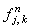
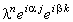

|
Исследуем устойчивость неявной разностной схемы (7.3),
аппроксимирующей дифференциальное уравнение (7.1), с помощью спектрального метода.
Для этого отбрасываем член , наличие которого, как известно, не оказывает влияния на устойчивость
разностной схемы, и представляем решение в виде гармоники:
Далее, упрощаем полученное выражение, деля левую и правую его части на :
Используя зависимости (3.9), (3.10), получаем формулу
из которой выражаем  :
Видно, что собственные числа оператора перехода удовлетворяют необходимому условию устойчивости
разностных схем (3.8) при любых значениях :
Видно, что собственные числа оператора перехода удовлетворяют необходимому условию устойчивости
разностных схем (3.8) при любых значениях  ;
следовательно, неявная разностная схема (7.3) является
абсолютно устойчивой. ;
следовательно, неявная разностная схема (7.3) является
абсолютно устойчивой.
Разностный шаблон (см. рисунок), характеризующий неявную разностную схему (7.3),
свидетельствует о том, что она содержит пять неизвестных величин - значений функции u на
(n + 1)-ом шаге по времени. Это означает, что разностная схема (7.3) без дополнительных
преобразований неразрешима.
|